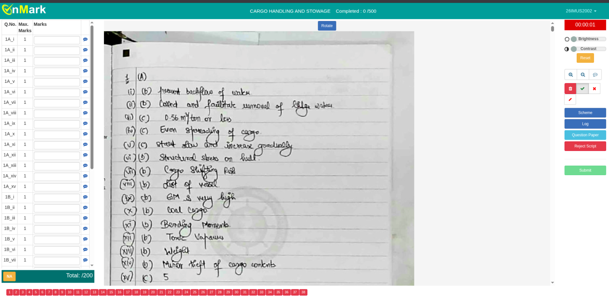
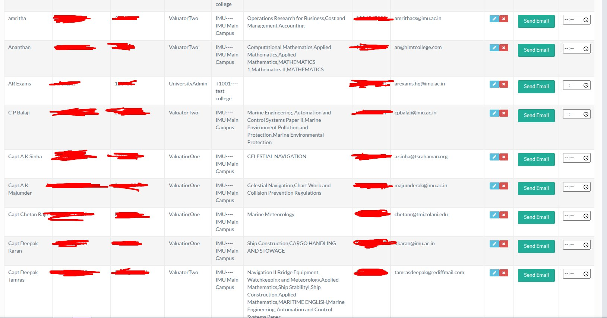

Another OnMark System Failure: Evaluation Portal Pwned
Another integral OnMark subdomain has been pwn'ed.
Overview
Nisarga and I found a critical vulnerability in an OnMark evaluation portal that appears to be used for exam evaluation across universities and affiliated institutions. The portal handled evaluator accounts, subject assignments, scanned answer scripts, and the marking workflow itself.

Initial Access
The initial access came through guessable credentials. Once logged in, the portal exposed administrative-level access, including CRUD functionality over user accounts. This meant accounts could be viewed, created, edited, and managed directly from the portal.
Impact
The impact was severe. Evaluator emails, usernames, passwords, phone numbers, institution details, and assigned subjects were exposed. The same access also allowed pivoting into evaluator accounts, where scanned answer scripts and the marking interface were accessible.

This was not just a data leak. The portal exposed the actual exam evaluation workflow, including answer scripts, editable marks fields, comments, reject-script controls, and submission-related functionality.
That makes this both a confidentiality issue and a potential integrity issue for academic evaluation.
Disclosure
This is yet another failure of an OnMark system. A platform responsible for handling exam scripts and evaluator access should not rely on weak credentials, expose passwords in plaintext, or allow sensitive academic records to be accessed through broken access control.
Nisarga and I have already reported this vulnerability to CERT-In.
No marks were submitted, no answer scripts were modified, and no destructive testing was performed. The purpose of this disclosure is to highlight how fragile these systems can be when basic security controls are missing.